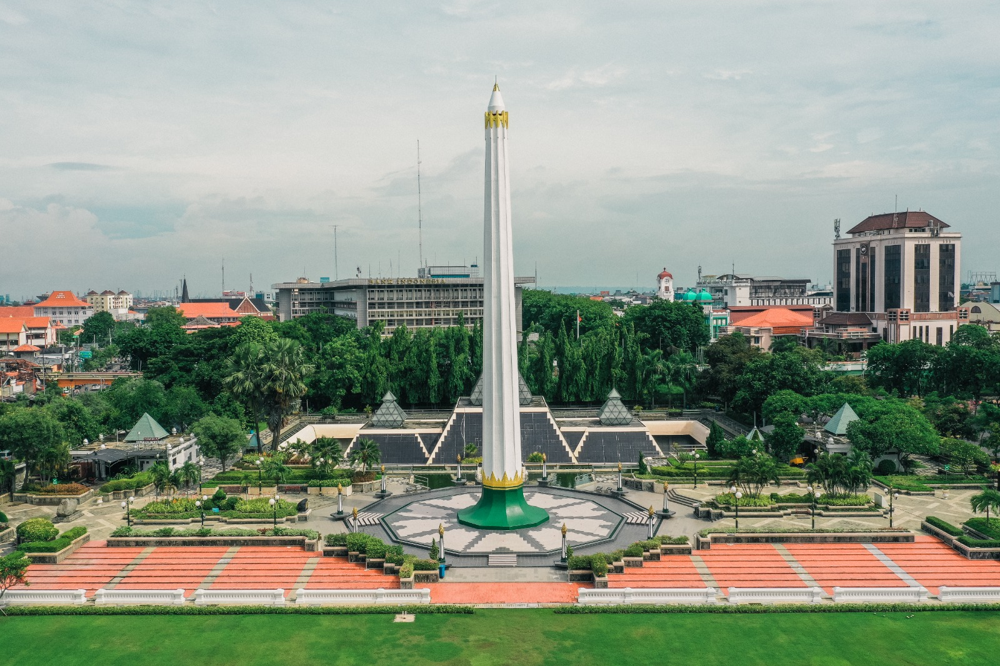

Tugu Pahlawan adalah sebuah monumen yang menjadi markah tanah Kota Surabaya. Tinggi monumen ini adalah 41,15 meter dan berbentuk lingga atau paku terbalik. Tubuh monumen berbentuk lengkungan-lengkungan (canalures) sebanyak 10 lengkungan, dan terbagi atas 11 ruas. Tinggi, ruas dan canalures mengandung makna tanggal 10, bulan 11, tahun 1945. Suatu tanggal bersejarah, bukan hanya bagi penduduk Kota Surabaya, tetapi juga bagi seluruh Rakyat Indonesia. Tugu Pahlawan dibangun untuk memperingati peristiwa Pertempuran 10 November 1945 di Surabaya, di mana arek-arek Suroboyo berjuang melawan pasukan Sekutu bersama Belanda yang hendak menjajah kembali Indonesia. Monumen Tugu Pahlawan menjadi pusat perhatian setiap tanggal 10 November mengenang peristiwa pada tahun 1945 ketika banyak pahlawan yang gugur dalam perang kemerdekaan.
Monumen ini berada di tengah-tengah kota di Jalan Pahlawan Surabaya, dan di dekat Kantor Gubernur Jawa Timur. Tugu Pahlawan merupakan salah satu ikon Kota Surabaya sebagai Kota Pahlawan. Berdiri di atas tanah lapang seluas 1,3 hektare, dan secara administratif berada di wilayah Kelurahan Alun-Alun Contong, Kecamatan Bubutan, Kota Surabaya.
Keberadaan Tugu Pahlawan menjadi pengingat bagi generasi sekarang tentang semangat perjuangan, keberanian, dan kecintaan terhadap tanah air.